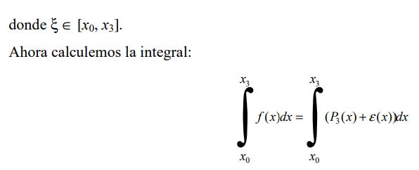

Describiendo el metodo y su aplicación.
donde yi = f(xi) y ε(x) es el error entre la función y el polinomio interpolante:
|  |
El lado derecho podemos repararlo en dos integrales independientes, como lo hicimos en el caso de Simpson 1/3, por lo que empezaremos con:
Pero recordemos que los puntos son equidistantes, es decir x3 – x2 = x2 - x1 = x1 - x0 igualando esta diferencia a h, la primera integral en (6) se reduce a:
sea u = (x - x1) y dv = (x - x2) (x – x3) dx
entonces
Para resolver la integral 8a, tomemos u1 = (x – x2) y dv1 = (x – x3) dx
entonces
Entonces la integral 8a, es:

|
Aún nos faltan dos integrales por resolver para tener el resultado de la integral en (8), la segunda es directa, así que resolveremos la primera:

|
Sustituyendo estos resultados en (9), tenemos:
Evaluando tenemos:
Procediendo de la misma manera para las tres integrales restantes en (6), tenemos:
Si ahora consideramos siete puntos de la misma función equidistantes (x0, y0), (x1, y1), (x2, y2), (x3, y3), equidistantes (x4, y4), (x5, y5), (x6, y6) cuyas ordenadas equidistan, como se muestra en la grafica 2.
Ahora calculamos la integral desde x0 hasta x6, para ello utilizamos la expresión (10) pero la aplicamos primero de x0 a x3 y después desde x3 hasta x6.
el signo ≈ es usado por que aun no consideramos el valor del error. Como las siete abscisas son equidistantes h es la misma para cada término del lado derecho, podemos agrupar de la siguiente forma.
Ahora podemos aplicar repetidas veces la expresión (13) para obtener la integral de una función sobre el intervalo (x0, x3n), el número total de puntos siempre debe ser de la forma 3n +1, notemos que los extremos se suman una sola vez, mientras que las ordenadas con índice múltiplo de tres se suman dos veces y las ordenadas restantes se suman tres veces, así que para 3n +1 puntos el valor de la integral se obtiene como sigue: